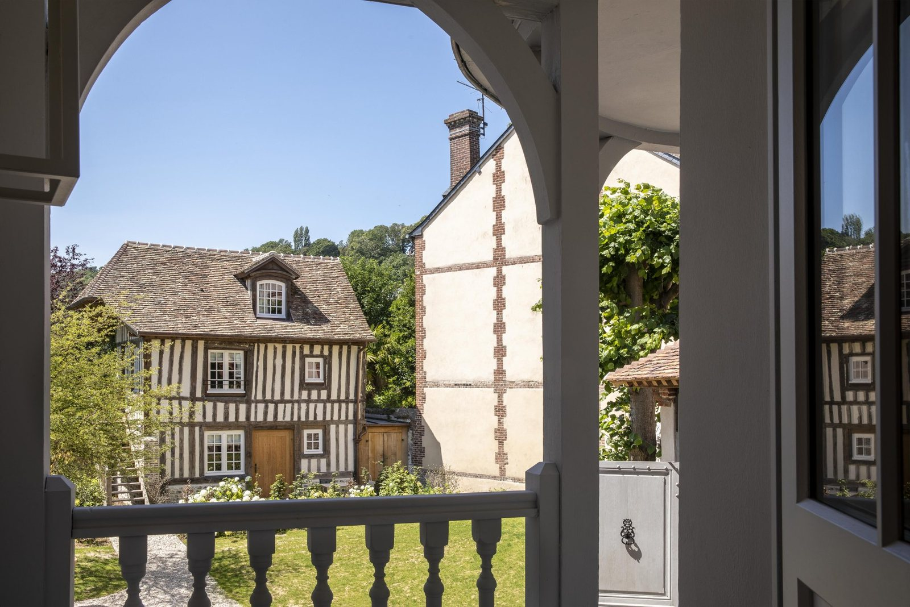
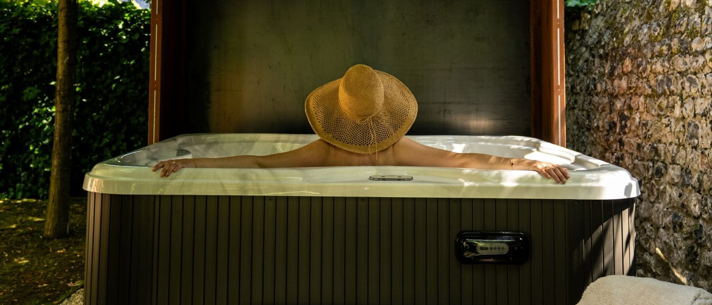

Hôtel Saint-Delis, avis : neuf chambres dans la maison du peintre, au cœur de Honfleur
Trois bâtiments autour d'un jardin clos, neuf clés seulement, une douche-hammam dans chacune, et depuis ce printemps un bain à remous sous un abri d'acier. C'est la plus petite maison 5 étoiles de Normandie, et elle n'a pas de restaurant.

La maison de maître, vue du jardin clos, avec son perron de bois et ses lucarnes d'ardoise. Photo : site officiel de la maison.
TL;DR : l'essentielScore LMHS 8,6/10, Indice Héritage Normand 4,7/5
- Neuf chambres, réparties sur trois bâtiments : deux maisons à colombages et une maison de maître, autour d'un jardin clos. Six clés dans la maison principale, trois au jardin, dont une de plain-pied avec terrasse privative. Toutes ont une douche-hammam, ce qui règle la question du parcours humide partagé.
- Il n'y a pas de cabine de soins sur place, et il n'y a pas non plus de restaurant. Les praticiennes reçoivent à la Ferme Saint-Siméon, la maison mère. Le bien-être du Saint-Delis tient à la douche-hammam de chaque chambre et au Spa du Verger, ouvert au printemps 2026 dans le jardin.
- Maison réservée aux adultes, à partir de 18 ans. Quatre catégories, de la Chambre Classique de 23 m² dès 218 € à la Junior Suite de 46 m² dès 510 €, tarifs relevés sur la fiche Relais & Châteaux de la maison.
Avis documentaire. Nous n'avons pas dormi au Saint-Delis. Les éléments de cette page ont été relevés le 20 août 2026 sur le site officiel de la maison et sur sa fiche Relais & Châteaux, recoupés avec la base Mérimée du ministère de la Culture pour ce qui touche au bâti. Les observations de visite sont celles de Yonder, citées comme telles. Notre note porte sur ce qui est vérifiable, pas sur une nuit que nous n'avons pas passée.
Trois maisons, un jardin clos, et un porche qui ferme tout
La première chose à comprendre du Saint-Delis, c'est qu'il n'est pas une maison mais trois. Un porche sur la rue du Puits, et derrière lui, un jardin clos autour duquel se répartissent deux maisons à colombages et une maison de maître. Celle de droite en entrant présente les attributs typiques des belles maisons du Pays d'Auge du XVIIe siècle, colombage serré, tuiles plates, lucarne à croupe. La maison de maître, elle, est d'un tout autre registre : enduit blanc, chaînages saillants, toit d'ardoise à lucarnes, un perron de bois qui descend sur le gravier.
Cette juxtaposition est ce que la photographie ne rend jamais bien, et c'est pourtant le vrai sujet architectural de la maison. On passe d'une façade normande à une façade bourgeoise en traversant une pelouse. La restauration, conduite en 2019 pour une ouverture en 2020, est l'œuvre des architectes belges Jessy Klönhammer et Marc Vander Elst. Elle a conservé l'escalier de chêne d'origine, et le dessin du jardin a été rétabli d'après des plans retrouvés aux archives municipales.
Une précision sur ce bâti, parce qu'elle circule partout sous une forme inexacte. On lit régulièrement que cet escalier serait classé monument historique. Nous ne l'avons pas retrouvé dans la base Mérimée du ministère de la Culture : à Honfleur, le seul bien protégé de la rue du Puits est le puits situé à l'angle de la rue Bucaille, inscrit le 11 octobre 1930. Cela n'enlève rien à l'escalier, qui est ancien et qui a été gardé. Cela veut simplement dire que la protection dont bénéficie la maison n'est pas individuelle : elle vient du site patrimonial remarquable de Honfleur, créé en 1974 et doté d'un plan de sauvegarde et de mise en valeur, qui encadre toute intervention sur le centre ancien. C'est une contrainte réelle, et elle explique la qualité de la restauration bien mieux qu'un classement qui n'existe pas.

L'une des deux maisons à colombages, vue depuis la loggia de la maison de maître. Les trois bâtiments se regardent par-dessus la pelouse. Photo : site officiel.
Le peintre qui refusait de vendre
La maison porte le nom de son ancien propriétaire, et ce nom mérite qu'on s'y arrête, parce que la plupart des pages consacrées à l'hôtel se contentent de la formule ancienne demeure d'un peintre impressionniste. Le peintre s'appelait Marie Isidore Henri Liénard de Saint-Delis, dit Henri de Saint-Delis. Il n'était pas normand : il est né le 4 avril 1878 à Marconne, dans le Pas-de-Calais, et sa famille s'installe au Havre après la mort du père, en 1882.
C'est là qu'il se forme, à l'École des beaux-arts du Havre, sous Charles Lhuillier, aux côtés d'un condisciple qui deviendra fauve : Othon Friesz. La maison indique volontiers qu'il fut membre de l'académie fondée par Rodolphe Julian à Paris ; les sources biographiques sont plus nuancées et décrivent une fréquentation sporadique de l'Académie Julian, moins déterminante pour lui que l'enseignement havrais. La tuberculose l'écarte de Paris et l'envoie à Leysin, en Suisse, de 1916 à 1919, où il peint la montagne. Il revient dans l'estuaire de la Seine en 1920 et n'en repartira plus. Il meurt à Honfleur le 15 novembre 1949.
Le fait qui rend cette maison singulière tient en une phrase : Henri de Saint-Delis a refusé, toute sa vie, d'exposer et de vendre. Ses aquarelles restaient chez lui, dans cette maison, et seuls ses amis peintres les connaissaient, Raoul Dufy, Georges Braque, Jules Ausset, Albert Copieux, Raimond Lecourt. Il a fallu attendre 1954, cinq ans après sa mort, et une rétrospective à la galerie André Weil à Paris, pour que son travail sorte de la rue du Puits.
Autrement dit, l'hôtel occupe la maison d'un homme qui n'a jamais voulu qu'on entre dans son atelier. C'est une ironie dont la maison ne joue pas, et qu'elle aurait tort de gommer : elle donne à ces neuf chambres une épaisseur que le mot impressionniste plaqué sur une plaquette ne donne pas. La chambre du peintre est la n° 3, au premier étage, ouverte sur la courbe de la rue. Dans les autres, des peintures sur plaques d'acier de l'artiste belge Adrien Roubens, réalisées pour le lieu et inspirées de l'univers de Saint-Delis, tiennent lieu de citation.
Neuf clés, quatre catégories, et une hiérarchie qui ne tient pas à la surface
Neuf chambres, c'est le format le plus rare de notre base normande, et c'est ce qui place cette maison en tête de notre sélection romantique régionale alors qu'elle n'est que cinquième au score global. Six clés occupent la maison principale, trois sont dispersées au jardin, dont une de plain-pied dotée d'une terrasse privative. Toutes, sans exception, disposent d'une douche-hammam.
Le détail qui mérite d'être signalé avant de réserver est ailleurs, et il est contre-intuitif. La Chambre Supérieure n'est pas plus grande que la Classique : la première s'étend de 23 à 29 m², la seconde de 23 à 30 m². Ce qui les sépare n'est pas la surface, mais la position et l'ouverture sur le jardin. Le vrai saut se produit à la Deluxe, qui gagne à la fois du volume, de 31 à 37 m², et une baignoire balnéo en plus de la douche-hammam. Le second saut se produit à la Junior Suite, de 40 à 46 m², qui ajoute au même équipement une heure de Spa du Verger incluse. Comme la maison le dit elle-même, aucune chambre n'est identique à une autre, et les photographies ne montrent qu'un niveau de confort, pas une pièce précise.
| Catégorie | Surface | Salle de bain | Spa du Verger | À partir de |
|---|---|---|---|---|
| Chambre Classique | 23 à 30 m² | Douche-hammam | 50 € le créneau | 218 € |
| Chambre Supérieure | 23 à 29 m² | Douche-hammam | 50 € le créneau | 274 € |
| Chambre Deluxe | 31 à 37 m² | Douche-hammam et baignoire balnéo | 50 € le créneau | 387 € |
| Junior Suite | 40 à 46 m² | Douche-hammam et baignoire balnéo | Une heure incluse | 510 € |
Tarifs d'appel relevés le 20 août 2026 sur la fiche Relais & Châteaux de la maison. Ils varient fortement selon la saison : le moteur de réservation officiel affichait 621 € pour une nuit du 20 au 21 août.
Un point que nous préférons écrire plutôt que laisser découvrir à l'arrivée : la maison est réservée aux adultes, à partir de 18 ans. C'est ce qu'indiquent la page d'accueil du site officiel et la fiche Relais & Châteaux. Toutes les chambres sont d'ailleurs annoncées pour deux personnes, et la disposition historique du bâtiment ne permet pas d'ajouter de lit. Si vous voyagez en famille, c'est la maison mère qu'il faut viser.
Le bien-être : une douche-hammam par chambre, et un bain à remous sous un abri d'acier
Sur un site qui classe des hôtels avec spa, ce chapitre demande de la précision, et la précision est ici moins flatteuse que le mot spa qui figure dans l'enseigne. Il n'y a aucune cabine de soins au Saint-Delis. Les praticiennes de la maison reçoivent à la Ferme Saint-Siméon, à quelques minutes, et c'est là que se prennent les massages.
Ce que la maison possède en propre tient en deux choses, et elles ne sont pas négligeables. La première est la douche-hammam présente dans les neuf chambres, à laquelle s'ajoute une baignoire balnéo en Deluxe et en Junior Suite. C'est la réponse que nous préférons dans une maison de cette taille : neuf clés ne justifient pas un parcours humide commun, et un hammam privatif vaut mieux qu'un hammam partagé à quatre.
La seconde est le Spa du Verger, ouvert au printemps 2026 au fond du jardin, avec le concours de la Région Normandie. Un bain à remous et une douche extérieure, abrités sous une charpente d'acier corten, entre une haie taillée et un mur de silex. Le fonctionnement est limpide et mérite d'être connu avant de réserver : privatisation par créneau d'une heure, pour deux personnes, entre 10 h et 23 h, réservé à la clientèle hébergée. L'accès est inclus pour une Junior Suite, et facturé 50 € le créneau pour les autres catégories.

Le Spa du Verger, ouvert au printemps 2026 : un bain à remous et une douche extérieure sous une charpente d'acier corten, au fond du jardin. Photo : site officiel.
Faut-il appeler cela un spa ? Nous préférons l'appeler par son nom : un bain à remous de jardin, très bien fait, privatisable, dans une maison qui n'a ni bassin ni cabine. C'est la raison pour laquelle cette adresse, malgré ses neuf clés et son Relais & Châteaux, ne monte pas plus haut sur notre grille. Pour comparaison, notre classement des thalassos normandes mesure des installations d'un tout autre ordre.
Pas de restaurant, mais un petit-déjeuner qui en tient lieu
Le Saint-Delis n'a pas de table. Il a un bar, un salon à cheminée, une terrasse, et un petit-déjeuner. Dans une ville qui compte plus de cent restaurants tous accessibles à pied, c'est un choix défendable, et il est compensé par l'appartenance à la Collection Saint-Siméon, dont les adresses sont à quelques minutes : Les Impressionnistes et La Boucane à la Ferme Saint-Siméon, l'Auberge de la Source et Le Vieux Honfleur.
Reste que le petit-déjeuner, ici, n'est pas un buffet d'hôtel. Il est servi dans la grande salle, sur des tables de chêne et de métal, sous une géode lumineuse ornée d'une fresque inspirée du peintre, face à une cheminée de pierre bleue. Tout y est fait maison, des viennoiseries aux confitures, en produits bio et locaux, en collaboration avec Matthieu Pouleur, chef des cuisines de la Ferme Saint-Siméon et chef de la Collection. Yonder, qui a séjourné dans la maison, cite le miel et le jus de pomme de la propriété et le pain préparé par le chef.
Deux formules : 34 € au buffet, de 8 h à 10 h 30, ou 40 € en chambre, de 8 h à 11 h. Détail rare et qui vaut d'être signalé : il est ouvert aux personnes extérieures à l'hôtel, sur réservation. Le chef prépare également, sur demande, un panier pique-nique.
Notre note, et où elle place la maison
Nous attribuons au Saint-Delis un Score LMHS de 8,6/10 et un Indice Héritage Normand de 4,7/5. Ces deux chiffres ne sont pas nouveaux : ce sont exactement ceux que porte la maison dans notre sélection des hôtels de charme en Normandie et dans notre palmarès des 5 étoiles normands, où elle est cinquième. Sur ce site, une même adresse ne porte jamais deux notes différentes.
Ce qui pousse la note vers le haut : neuf clés, c'est-à-dire le format le plus rare de la région, un bâti à trois maisons dont deux à colombages du Pays d'Auge, une restauration documentée, une douche-hammam dans chaque chambre, une position qui met le Vieux Bassin et l'église Sainte-Catherine à quelques minutes de marche, et l'appartenance à Relais & Châteaux depuis l'ouverture. La maison a par ailleurs été désignée plus beau boutique-hôtel du monde par les Hotel & Lodge Awards en 2023.
Ce qui la retient sous les neuf : l'absence de table, l'absence de cabine de soins, et le fait que l'équipement bien-être commun se résume à un bain à remous privatisable. Elle reste ainsi derrière le Château La Chenevière à 9,2/10 et la Ferme Saint-Siméon à 9,0/10, ce qui nous paraît juste : la maison mère a trente-cinq chambres, deux tables, un spa complet et un parc, pour un ticket d'entrée qui n'est pas si éloigné.
L'Indice Héritage Normand à 4,7/5 mesure autre chose : l'ancrage du bâti dans l'histoire régionale et sa lisibilité pour qui y séjourne. Deux maisons à colombages du Pays d'Auge, une maison de maître, un jardin redessiné d'après les archives municipales, et un peintre de l'estuaire dont la biographie tient dans les murs. Peu d'adresses normandes font aussi bien sur cette échelle, et seule la Ferme Saint-Siméon, avec son 5,0/5, fait mieux.
Le mot d'EmmanuelUne maison qui a gardé son échelle
Il y a deux façons d'installer un 5 étoiles dans une vieille maison. La première consiste à la vider et à y loger un hôtel : on gagne des chambres, on perd la maison. La seconde consiste à accepter le bâti tel qu'il est, avec ses trois volumes disjoints, son escalier étroit, ses pièces inégales, et à s'arrêter à neuf clés parce que la dixième aurait demandé de casser quelque chose. Le Saint-Delis a fait le second choix, et cela se lit partout : dans le fait qu'aucune chambre ne ressemble à sa voisine, dans l'aveu que les photos ne montrent qu'une catégorie et non une pièce, dans la Supérieure qui n'est pas plus grande que la Classique. Ce n'est pas de la négligence, c'est le prix d'une maison qu'on n'a pas redressée. En échange, il faut accepter ce que la maison n'a pas : ni table, ni cabine, ni bassin. Ceux qui viennent pour un spa d'hôtel seront déçus, et je préfère l'écrire avant qu'ils réservent. Ceux qui viennent pour dormir neuf, dans Honfleur, avec un hammam à eux, trouveront très peu d'équivalents en France. Réserve d'usage : nous n'avons pas dormi ici. L'architecture, les surfaces, les tarifs et les équipements se vérifient sur pièces. Le service, non, et nous ne le notons pas.
Emmanuel Laveran, rédacteur hôtels et gastronomie
Infos pratiques et accès
| Adresse | 43 rue du Puits, 14600 Honfleur |
| Téléphone | +33 2 31 81 78 10 |
| Courriel | contact@hotel-saint-delis.fr |
| Classement | 5 étoiles, Relais & Châteaux, Collection Saint-Siméon |
| Capacité | 9 chambres, dont 6 dans la maison principale et 3 au jardin |
| Bâtiment | Deux maisons à colombages du Pays d'Auge et une maison de maître, autour d'un jardin clos |
| Restauration | Rénovation 2019, ouverture 2020, architectes Jessy Klönhammer et Marc Vander Elst |
| Accueil | Maison réservée aux adultes, à partir de 18 ans |
| Bien-être en chambre | Douche-hammam dans les 9 chambres, baignoire balnéo en Deluxe et Junior Suite |
| Spa du Verger | Bain à remous et douche extérieure au jardin, créneau d'une heure pour deux, 10 h à 23 h, clientèle hébergée uniquement, inclus en Junior Suite, 50 € sinon |
| Soins et massages | Aucune cabine sur place, les praticiennes reçoivent à la Ferme Saint-Siméon |
| Table | Aucun restaurant. Bar, salon à cheminée, terrasse |
| Petit-déjeuner | 34 € au buffet de 8 h à 10 h 30, 40 € en chambre de 8 h à 11 h, ouvert aux non-résidents sur réservation |
| Conciergerie | Steven Vastra, concierge Clefs d'Or |
| Animaux | Acceptés, 40 € par nuit et par animal |
| Stationnement | Parking privé extérieur à proximité, 30 € par nuit, selon disponibilité |
| Langues | Français, anglais, espagnol, allemand |
| Accès | Deux heures de Paris par la route, aéroport de Deauville à 9 km |
| Score LMHS | 8,6/10 · Indice Héritage Normand 4,7/5 |
La Collection Saint-Siméon propose par ailleurs quelques activités qui sortent de l'ordinaire hôtelier : une découverte de Honfleur en calèche menée par Benoît Farain, champion de France d'attelage, un cours de peinture face à l'estuaire, et des sorties de kitesurf pour pratiquants confirmés.
FAQ : Hôtel Saint-Delis
L'Hôtel Saint-Delis a-t-il un spa ?
Pas au sens d'un spa d'hôtel avec cabines et bassin. Il n'y a aucune cabine de soins sur place : les praticiennes de la maison reçoivent à la Ferme Saint-Siméon, à quelques minutes. Le bien-être du Saint-Delis tient à deux choses : une douche-hammam dans chacune des neuf chambres, doublée d'une baignoire balnéo en Deluxe et en Junior Suite, et le Spa du Verger, ouvert au printemps 2026 dans le jardin, un bain à remous et une douche extérieure privatisés par créneau d'une heure pour deux personnes, entre 10 h et 23 h. L'accès est inclus avec une Junior Suite et facturé 50 € le créneau pour les autres catégories, pour la clientèle hébergée uniquement.
Combien de chambres compte l'Hôtel Saint-Delis ?
Neuf, ce qui en fait la plus petite maison 5 étoiles de Normandie. Six occupent la maison de maître, trois sont dispersées au jardin, dont une de plain-pied avec terrasse privative. Quatre catégories : Chambre Classique de 23 à 30 m², Chambre Supérieure de 23 à 29 m², Chambre Deluxe de 31 à 37 m² et Junior Suite de 40 à 46 m². Toutes disposent d'une douche-hammam ; la Deluxe et la Junior Suite ajoutent une baignoire balnéo.
Quel est le prix d'une nuit à l'Hôtel Saint-Delis ?
Les tarifs d'appel relevés sur la fiche Relais & Châteaux de la maison sont de 218 € pour une Chambre Classique, 274 € pour une Supérieure, 387 € pour une Deluxe et 510 € pour une Junior Suite. Ce sont des prix planchers : en plein mois d'août, le moteur de réservation officiel affichait 621 € pour une nuit. Le petit-déjeuner n'est pas compris, comptez 34 € au buffet ou 40 € en chambre.
L'Hôtel Saint-Delis a-t-il un restaurant ?
Non. La maison dispose d'un bar, d'un salon à cheminée et d'une terrasse, mais d'aucune table. Elle appartient en revanche à la Collection Saint-Siméon, dont les restaurants sont à quelques minutes à pied : Les Impressionnistes et La Boucane à la Ferme Saint-Siméon, l'Auberge de la Source et Le Vieux Honfleur. Le petit-déjeuner, lui, est entièrement fait maison, en collaboration avec Matthieu Pouleur, chef des cuisines de la Ferme Saint-Siméon.
Qui était Henri de Saint-Delis ?
Marie Isidore Henri Liénard de Saint-Delis, né le 4 avril 1878 à Marconne dans le Pas-de-Calais, mort à Honfleur le 15 novembre 1949. Formé à l'École des beaux-arts du Havre sous Charles Lhuillier, condisciple d'Othon Friesz, proche de Raoul Dufy et de Georges Braque. Installé dans l'estuaire de la Seine à partir de 1920, il y peignit des aquarelles pendant près de trente ans. Il refusa toute sa vie d'exposer et de vendre : son œuvre ne fut découverte qu'en 1954, cinq ans après sa mort, lors d'une rétrospective à la galerie André Weil à Paris. L'hôtel occupe sa maison, et sa chambre est la n° 3.
L'Hôtel Saint-Delis accepte-t-il les enfants ?
Non. La maison est réservée aux adultes, à partir de 18 ans, comme l'indiquent la page d'accueil du site officiel et la fiche Relais & Châteaux. Toutes les chambres sont annoncées pour deux personnes, et la disposition historique du bâtiment ne permet pas d'ajouter de lit. Pour un séjour en famille à Honfleur, il faut se tourner vers une autre adresse de la Collection Saint-Siméon.
Méthode et sources
Avis documentaire, sans séjour de contrôle, et nous ne prétendons pas le contraire. Le Score LMHS sur 10 relève de la grille LMHS Destination ; l'Indice Héritage Normand sur 5 est celui de nos deux palmarès normands. Les deux valeurs sont reprises à l'identique de notre sélection du 4 août 2026 et de notre palmarès 5 étoiles du 14 août 2026, afin qu'une même adresse ne porte jamais deux notes différentes sur ce site. Adresse, téléphone, capacité, catégories, surfaces, équipements, horaires et tarifs du petit-déjeuner relevés le 20 août 2026 sur le site officiel de la maison ; tarifs d'appel par catégorie relevés le même jour sur sa fiche Relais & Châteaux, qui porte également la mention d'accueil réservé aux adultes de 18 ans et plus. La répartition des neuf clés entre les bâtiments, le nom des architectes de la restauration et les observations de séjour proviennent de l'article de Yonder, cité comme tel. La biographie du peintre a été recoupée sur les notices publiques et les catalogues de vente. La protection du bâti a été vérifiée dans la base Mérimée du ministère de la Culture : le seul bien protégé de la rue du Puits est le puits d'angle avec la rue Bucaille, inscrit le 11 octobre 1930 ; la maison relève du site patrimonial remarquable de Honfleur, créé en 1974. Aucune note de plateforme d'avis n'est reprise : nous ne collectons pas d'avis clients, et un média ne publie pas en données structurées une moyenne qu'il n'a pas produite. Aucun partenariat commercial, aucune affiliation, aucun séjour offert. Photographies : site officiel de la maison.
Pour aller plus loin
- Meilleurs hôtels de luxe en Normandie : les 8 adresses 5 étoiles de 2026
- Hôtels de charme en Normandie : 10 adresses classées
- Hôtel romantique en Normandie : 8 adresses pour un week-end à deux, où cette maison est première
- Ferme Saint-Siméon, avis : l'auberge où l'impressionnisme a commencé, la maison mère
- Thalasso en Normandie : 10 adresses classées
- Notre méthode, les grilles de notation et les règles d'indépendance